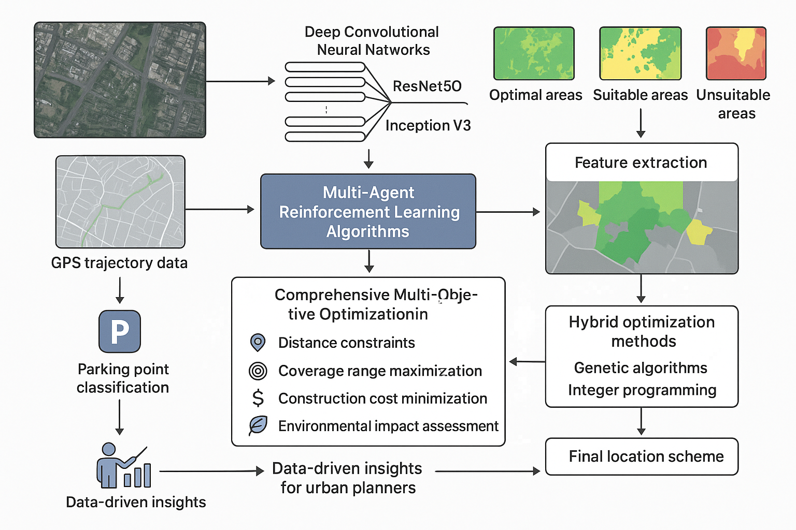

Figure 1: Multi-Agent Reinforcement Learning (MARL) based charging station location optimization system. The workflow includes satellite image analysis, candidate site generation, MARL-based ranking/selection, and hybrid optimization via GA + Integer Programming.
本项目提出了一种基于深度学习的智能充电站选址优化系统。系统结合卷积神经网络对卫星图像进行区域识别，与多智能体强化学习（MARL）对候选站点进行交互式评分和排序，并在覆盖、距离、成本与环境影响等多目标下进行综合优化，最终通过遗传算法与整数规划获得可行最优解。
This research presents a MARL-based charging station location optimization system integrating CNN-based satellite image analysis, multi-objective optimization (distance, coverage, cost, environmental impact), and hybrid search (genetic algorithms and integer programming) to provide data-driven planning insights.
利用 CNN + MARL + GA/IP 的混合框架，对候选站点进行自动评分、排序与优化，兼顾覆盖、距离、成本与环境约束，生成高质量充电站选址方案。